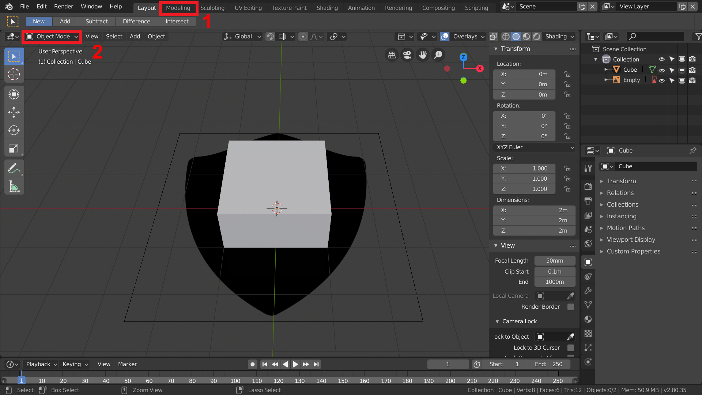

Übung 2.1 - Polygonal Modeling
| Wichtiger Hinweis |
|---|
| Die Abgabe für diese Übung besteht aus zwei Teilen: der Schilder und einem Schwert! Lesen Sie dazu unten den Absatz “Aufgabe”. |
Der Edit-Mode
Im folgenden Kapitel werden die Grundlagen des Modellierens erläutert. Dazu erstellen wir einen mittelalterlichen Schild. Die Arbeitsweise des steigenden Detailgrades und der Aufbau eines 3D-Meshs sind besonders zu beachten.
1. Vorbereitung
- Erstellt ein neues Blender-File.

- Löscht alle Objekte bis auf den Würfel, indem ihr mit
Aalles auswählt, mit gedrückterShift-Taste auf den Würfel klickt und anschließend mitXalle ausgewählten Objekte löscht. - Fügt über das Menü
Add→Image→Referenceoder mit dem ShortcutShift + Aein Bild als Referenz ein. Nutzt dafür das bereitgestellte Bild oder ein selbst ausgewähltes Design.
{kind=link}

- Öffnet mit
Ndas Number Panel und setzt die Position und Rotation auf 0, sodass das Bild flach im Ursprung liegt.

- Wechselt jetzt ins Modeling Workspace (1).
Beim Wechsel zum Modeling Workspace wird bereits automatisch der Edit Mode aktiviert. Um zwischen Edit Mode und Object Mode zu wechseln könnt ihr das Interaction Mode Menu (2) oder den Shortcut
Tabnutzen.
2. Grundform

- Verschiebt den Würfel im Object- Mode an der Y- Achse nach oben, sodass er über dem Bild schwebt.

- Wechselt durch das Menü
View→Viewpoint→Top, dem ShortcutNum 7oder mitAlt + mittlere Maustastein die Top-Ansicht. - Stellt mit
Zauf Wireframe. Dadurch werden Objects durchsichtig und ihr könnt auch Vertices auswählen, die hinter anderen Vertices liegen.

- Erstellt mit “Loop Cut and Slide” oder
Ctrl + Reinen Loop Cut in der Mitte des Würfels und löscht eine Hälfte indem ihr sie auswählt und anschließendXdrückt.
Loop Cuts teilen das geasamte Mesh und funktionieren wie die meisten Bearbeitungsfuntionen nur gut mit Quadrangles bzw. Quads (Vierecken). Meshes aus Triangles bzw. Tris (Dreiecken) und/oder N-Gons (Vielecken) haben bei der Bearbeitung meist unerwartete und ungewollte Effekte. Loop Cuts werden beispielsweise durch Tris unterbrochen und erstellen Kanten, die sich theoretisch als Viereck gegenüberstehen, tatsächlich aber immernoch ein Dreieck mit einer unterbrochenen Kante bilden.

- Verschiebt jetzt die noch vorhandenen Eckpunkte passend zum Referenzbild.

- Wählt im Properties Panel den Schraubenschlüssel (1) aus und fügt den Mirror- Modifier zu eurem Würfel hinzu (2). Stellt den Modifier auf die richtige Achse (3) ein, um euren Würfel wieder zu vervollständigen.
Mit einem Mirror Modifier zu arbeiten bietet sich bei allen symmetrischen Objekten an, da es die Häfte der Arbeit erspart. Selbst wenn nur die Grundform symmetrisch ist kann man Details später immer noch für die Seiten individuell anpassen.

- Fügt nun weitere Loop Cuts ein. Einen horizontal und einen vertikal, wobei beim vertikalen im Menü Loop Cut and Slide die Number of Cuts auf “2” gestellt werden sollte.

- Passt nun auch für die neu erstellten Punkte die Position passend zum Referenzbild an.
Da wir nur ein sehr minimalistisches Referenzbild für die Grundform des Schildes nutzen, können wir es jetzt da die Form erreicht ist löschen.

- Wechselt durch das Drücken von
Zdie Shading Method wieder zurück ins Solid Shading. - Dreht die Kamera so, dass ihr auch wieder die Höhe eures Objektes sehen könnt, wählt alle Flächen auf der Oberseite des Schildes aus und verschiebt sie entlang der Z-Achse so, dass euer Schild eine passende Stärke hat.
3. Details

- Um durch einen sogenannten Inset einen schönen Rand für das Schild zu erstellen, müsst ihr zuerst den Mirror Modifier anwenden. Dafür drückt ihr im Modifier einfach auf den “Apply”.

- Wählt jetzt wieder die oberen Flächen des Schildes aus falls sie nicht noch ausgewählt sind und benutzt im Menü links das Inset Tool oder drückt
I. Erstellt damit einen Rand.

- Wählt die neuen Flächen aus und nutzt das Extrude Tool oder
Eum den Rand auszumodellieren.

- Um eine runde Kante zu erhalten, wählt die äußeren Kanten des extrudierten Randes aus und nutzt das Bevel Tool oder
Strg + B.
Die Werkzeuge Extrude, Loop Cut, Bevel und Inset sind die am häufigsten genutzten Funktionen beim Modellieren. Sie sind optimal um neue Edge Loops und Geometrieformen zu erzeugen. Bei der Nutzung des Bevel Tools muss allerdings aufgepasst werden, da sehr schnell N-Gons erzeugt werden, wenn man keinen ganzen Edge Loop ausgewählt hat.
- Verziert das Schild nun mit den kennen gelernten Methoden. Erstellt Details wie z.B. Nieten, Dellen oder Armlaschen.
4. Vervielfältigen
Neben dem oben kennengelernten Mirror Modifier gibt es noch zahlreiche andere Modifier, die man zum Verändern des Meshes einsetzen kann.

Nutzt den Array Modifier um euer Schild zu klonen bis ihr 4 Schilde habt. Setzt dafür in den Modifier-Einstellungen einfach den “Count” (1) auf “4” und stellt einen Offset (2) an der X- oder Y-Achse ein.
Sorgt dafür, dass ihr eure Schilde individuell bearbeiten könnt indem ihr mit “Apply” (3) die geometrischen Änderungen des Modifiers übernehmt.

- Macht nun aus jedem Schild ein eigenes Objekt. Dazu wählt ihr im Edit- Mode jeweils ein ganzes Schild aus und drückt
Pum die Auswahl als neues Objekt abzutrennen.
Einschneiden
Mit dem Boolean- Modifier könnt ihr Objekte aus anderen Objekten ausschneiden.

Erstellt neue Objekte in eurer Szene, deren Form ihr aus euren Schilden ausschneiden wollt. Zum Beispiel zwei Zylinder.
Platziert die auszuschneidenden Objekte an einer passenden Stelle.

Fügt einem eurer Schilde für jedes auszuschneidende Objekt einen Boolean- Modifier hinzu(1).
Wählt als Operation “Difference”(2) aus und als Objekt(3) eines der auszuschneidenden Objekte.

- Wendet den Modifier nun mit “apply” an und löscht oder verschiebt anschließend die Objekte.
Den Boolean Modifier während des Modellierens anzuwenden ist nicht zu empfehlen, da er die Struktur des Meshes (Topologie) zerstört und viele N-Gons erzeugt.
Aufgabe
- Verändert das Aussehen aller vier Schilde indem ihr unterschiedliche Objekte an unterschiedlichen Stellen ausschneidet.
- Erstellt, wie schon das Schild, ein Schwert mit dem beigefügten Refferenzbild. Das Schwert muss nicht vervielfältigt werden, sollte dafür aber eine schöne Mesh- Struktur und aufwändige Parierstange und Griff haben. Hier lässt sich sehr schön mit Extrude und Bevel arbeiten. Die abzugebenden Objekte müssen aus einem zusammenhängenden, ausmodellierten Mesh bestehen.
{kind=link}
Ressourcen & Tutorials zum Thema
| Art/Länge | Titel | Thema | Quelle |
|---|---|---|---|
| Modeling Introduction - Blender 2.80 Fundamentals | Modeling | YouTube - Blender (offizieller Kanal) | |
| Object and Edit Mode - Blender 2.80 Fundamentals | Interface & Basics | YouTube - Blender (offizieller Kanal) | |
| Beginner Blender Tutorial Level 1 - Part 2: Modelling | Modeling | YouTube - Blenderguru | |
| Blender 2.8 Beginner Tutorial - Part 4: Hard-Surface Modeling | Modeling | YouTube - CG Boost | |
| Editing - Blender Manual | Mesh Tools | Blender Reference Manual |
Gelerntes
| Funktion | Kontext | Shortcut |
|---|---|---|
| Modus wechseln | Edit Mode / Object Mode | Tab |
| Wireframe Mode | Edit Mode / Object Mode | Z |
| Loop Cut and Slide | Edit Mode | Ctrl + R |
| Inset | Edit Mode | I |
| Extrude | Edit Mode | E |
| Bevel | Edit Mode | Strg + B |
| Detatch | Edit Mode | P |